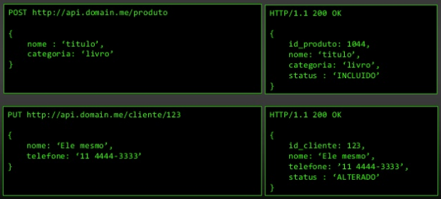

Todo recurso deve ter uma URL única de acesso
Uma API desenhada para um sistema de livraria tem, por exemplo:
A URI deve ser capaz de referenciar o recurso de forma exata a qualquer momento no tempo.
Exemplo:
GET /api/v1/books/a-guerra-dos-tronos/last
Considere:
GET /api/v1/books/g-r-r-martin/a-guerra-dos-tronos-as-cronicas-de-gelo-e-fogo
GET /api/v1/books/g-r-r-martin/a-guerra-dos-tronos-a-furia-dos-reis
É interessante fornecer uma URL amigável.
Uso de slug codes. Ex.:
/uf/12
/uf/minas-gerais
/personalidade/1
/personalidade/machado-de-assis
POST /data/documents/balance HTTP/1.1
Content-Type: text/xml
Host: www.mydatastore.com
<?xml version="1.0" encoding="utf-8"?>
<balance date="22082014">
<item>Sample item</item>
<price currency="EUR">100</price>
</balance>HTTP/1.1 201 Created
Content-Type: text/xml
Location: /data/documents/balancePOST /data/documents/balance HTTP/1.1
Content-Type: text/xml
Host: www.mydatastore.com
{
"balance": {
"date": ""22082014"",
"Item": "Sample item",
"price": {
"currency": "EUR",
"value": "100"
}
} }HTTP/1.1 201 Created
Content-Type: text/xml
Location: /data/documents/balance| HTTP Method | Safe | Idempotent |
|---|---|---|
| GET | Yes | Yes |
| POST | No | No |
| PUT | No | Yes |
| DELETE | No | Yes |
Hypermedia as the Engine of Application State
“A REST API should be entered with no prior knowledge beyond the initial URI… From that point on, all application state transitions must be driven by client selection of server-provided choice… “
{
"metadata": {
"links": [
"books": {
"uri": "/books",
"content-type": "application/json"
},
"authors": {
"uri": "/authors",
"content-type": "application/json"
}
] }
}
Fonte: Hateos Arquitetura Rest 100% Aderente